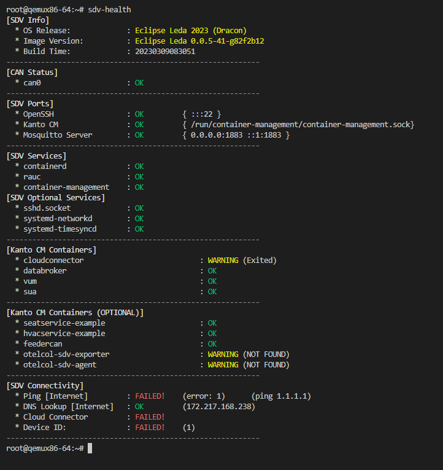
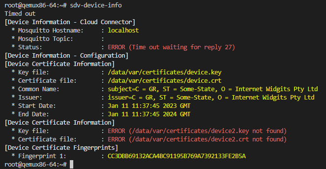
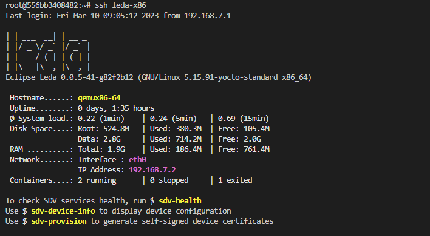
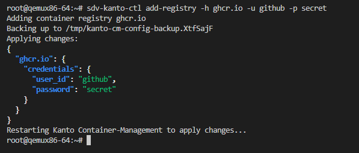
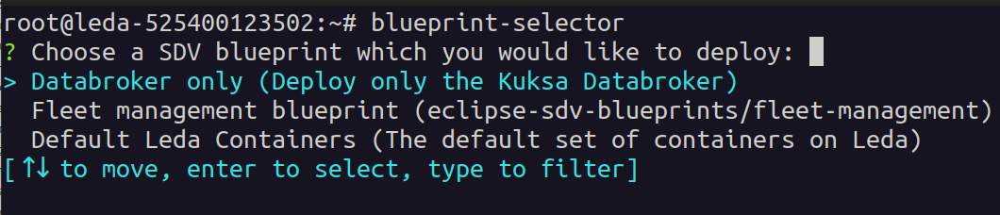

This is the multi-page printable view of this section.
Click here to print.
Return to the regular view of this page.
Utilities
The quickstart image contains the following utilities.
These utility scripts are meant to be convenience tools for users and developers.
They help to experiment with the container deployment, device provisioning or vehicle data access.
- sdv-health: Show SDV software components health status
- kantui: A text user interface for kanto-cm to manage containers (start, stop, logs, redeploy all)
- sdv-device-info: Show and update device information
- sdv-provision: Generate device certificates and configuration of cloud connection
- sdv-motd: Message-of-the-Day shown after login prompt
- can-forward: Forwarding a CAN-bus network interface into a containerized Vehicle Application
- kanto-auto-deployer: Automatically deploys containers on boot. Runs as a systemd service, and can also be invoked by a user directly.
- sdv-ctr-exec: Execute arbitrary commands in existing containers
- sdv-kanto-ctl: Manage the Kanto Container Management configuration via CLI
- blueprint-selector: Deploy and fetch new SDV blueprints easily with an interactive CLI
Note:
These scripts are not meant to be reused or called from production software.
Their behaviour or command line syntax is not a stable API and should not be trusted for automation purposes.
For details, please see leda-utils
1 - SDV Health
Health check
The sdv-health utility displays a status overview of some important dependencies and device configurations for the SDV edge stack.
The sdv health utility can be configured using the sdv.conf configuration file.
Usage:
Example output:

The Leda image version and build time will be displayed at the top in the first category:
- OS Release: Year and codename of the release version
- Image Version: Name of the image and more specific version information, such as the git tag or commit id
- Build timestamp in
yyyMMddHHmmss notation
Note: The information is read from the system base file in /etc/os-release:
root@qemux86-64:~# cat /etc/os-release
BUILD_ID="20230309083051"
DISTRO_CODENAME="Dracon"
ID=leda
IMAGE_VERSION="0.0.5-41-g82f2b12"
NAME="Eclipse Leda"
PRETTY_NAME="Eclipse Leda 2023 (Dracon)"
VERSION="2023 (Dracon)"
VERSION_CODENAME="Dracon"
VERSION_ID=0.0.5-41-g82f2b12
Bus networks
If available, vehicle bus network information, such as the status of the CAN-Bus, will be displayed iin its own category.
This helps to quickly identify if there problems with the hardware connectivity for automotive bus networks.
Ports
The health utility checks the TCP ports of specific services.
This helps to identify if these services are up and running and potentiallyconnectable via external network interfaces.
Services and Containers
The services category shows the status of required and optional containers.
The required containers are supposed to be up and running for the SDV.EDGE stack to be correctly up and running.
If any of these core components have a failed state, the functionality is impacted.
The optional containers are for additional features and for example applications.
These containers may not be necessary for each use case and hence will be marked as a warning if they are not up and running.
The overview still helps to identify which containers are working properly.
Errors, Warnings, Failed states
When there are errors or warnings related to the status of SDV related components,
the health utility will print out these error states, and if available also a more detailed error message.
In the following example, the health utility helps the troubleshooting process:
- The container runtime is properly started: “Kanto CM” is OK in the “SDV Ports” section and the “container-management” service is OK in the “SDV Services” section".
- Some containers are in state “OK”, which means there is no general issue with the container runtime.
- The cloud connector is in a “Stopped” state, which indicates that the user manually stopped the container by using “kanto-cm stop -n cloud-connector”.
- The sua container is in a “Exited” state, which indicates the process exited with an error code.

2 - KantUI
The KantoUI tool is a text-based user interface for conveniently managing containers in the Kanto Container Management.
It supports simple navigation using keyboard and mouse to select a specific container.
Commands to start, stop, remove and re-deploy containers are available along with a functionality to retrieve the application logs of a selected container.
Kanto User Interface
Usage:
Example output:

Command Line Options
Print command line help:
root@qemux86-64:~# kantui --help
kantui 0.2.0
A TUI for Kanto CM that allows easier management of deployed containers. Requires root.
USAGE:
kantui [OPTIONS]
OPTIONS:
-c, --config-file-path <CONFIG_FILE_PATH>
Set a custom path for the kantui configuration file [default:
/etc/kantui/kantui_conf.toml]
-h, --help
Print help information
-V, --version
Print version information
Note: All config values can be overridden through env variables prefixed with KANTUI_,
e.g. KANTUI_STOP_TIMEOUT=5 overrides the timeout before SIGKILL is sent to be 5 seconds.
Keyboard commands
- Arrow keys
Up and Down to select a container
- Arrow keys
Left and Right to select a column
Enter to change the sort ordering of the currently selected columnS to start the selected container which is currently not runningP to stop the selected containerR to remove a containerL to show the log output of a containerD to redeploy an existing container (rereads deployment descriptor)Q to quit kantui
Note: The mouse can be used to select ui items when holding the Shift key.
Starting, Stopping, Removing containers
To use the lifecycle commands on a container:
- Select a container by using the mouse or the arrow keys.
- The selected container is highlighted.
- Press one of the lifecycle commands, e.g.
s, p or r
- Wait for the value in the State column to change, before issueing the next command.
Note: When using the lifecycle commands for containers (Start, Stop, Remove), it may take a few seconds before the UI is updated with the status changes.
The amount of time before a container is forcefully killed is determined by the stop_timeout configuration option.
Show container Logs
To view the container’s log output:
- Select a container by using the mouse or the arrow keys.
- Press the
L key
- Log output will be displayed (tail, oldest messages first)
- Use the arrow keys
Up and Down or drag the scrollbar using your mouse to scroll through the log
- Close the Log viewer by pressing
Enter or clicking on the OK button
Note: The log output is not followed automatically. Close the dialog and reopen to see new output.
Redeploying containers
To redeploy a container, e.g. when a deployment descriptor has changed on disk:
- Select a container by using the mouse or the arrow keys.
- Press the
P key to stop the container
- Press the
R key to remove the container
- Press the
D key to invoke the Kanto Auto Deployer, which will redeploy the missing containers
Note: Only containers managed by Kanto Auto Deployer will be redeployed.
Column Sorting
To sort a column:
- Select the column using the
Left and Right arrow keys
- Press
Enter to activate sorting
- Press
Enter again on a sorted column to invert sort order (Ascending -> Descending -> Ascending)
Note: The selected sort order is not persisted and will reset to the default on restart: By ID, ascending
Configuration File
The default location of the configuration file is /etc/kantui/kantui_conf.toml:
# General Configuration Options
socket_path = "/run/container-management/container-management.sock" # Path to kanto-cm unix socket
stop_timeout = 5 # timeout (integer) in seconds before a SIGKILL is sent after a SIGTERM
[keyconfig]
start_btn_name = "[S]tart"
start_kbd_key = "s"
stop_btn_name = "Sto[P]"
stop_kbd_key = "p"
remove_btn_name = "[R]emove"
remove_kbd_key = "r"
logs_btn_name = "[L]ogs"
logs_kbd_key = "l"
quit_btn_name = "[Q]uit"
quit_kbd_key = "q"
redeploy_btn_name = "Re[D]eploy"
redeploy_kbd_key = "d"
# Includes a shell lexer so anything that would be a valid shell command can be used
# No pipes/redirects allowed.
# N.B.: Command inherits kantui's privileges (root)
redeploy_command = "systemctl restart kanto-auto-deployer.service"
3 - SDV Device Info
Displays the current device configuration, such as Device ID.
Note: Requires the Cloud Connector component to be configured and running.
Usage:

Usage
Synposis: ./sdv-device-info [options] [command]
Full help:
root@qemux86-64:~# sdv-device-info --help
sdv-device-info v0.2
Usage: /usr/bin/sdv-device-info [options] [command]
Show SDV device configuration information
Example: /usr/bin/sdv-device-info show
Commands:
show : Display configuration (default command)
help : This message
env : Format output for use in scripts
Options:
--ansi | -a : Don't use colored output.
--norestart | -n : Do not automatically restart services
--verbose | -v : Enable verbose mode.
--help | -h : This message.
Use in scripts
To use device information on other scripts, it may be useful to source the device information variables into the current environment variable context:
Synposis: source ./sdv-device-info env
Example:
$ source ./sdv-device-info env
$ echo $DEVICE_ID
exampledevice1
4 - SDV Provision
The provisioning helper script can be used to manually perform a device provisioning with a cloud backend.
It is meant as a convenient tool for developers, who wish to connect their device to a selfmanaged cloud backend directly.
In a production environment, the device provisioning functionality is implemented either by the Cloud Connector component.
The provisioning script currently supports the following backend and authentication options:
- Azure IoT Hub
- Connection String
- Device Certificates
- Azure IoT Device Provisioning Service
Usage
The sdv-provision script is interactive and asks for the type of backend and authentication option:
root@qemux86-64:~# sdv-provision
Checking Eclipse Leda Device Provisioning configuration...
- Certificates directory exists
Checking Device ID
- Based on network device: eth0
- Device ID: 52-54-21-4c-f9-5a
Checking whether either IdScope or ConnectionString is configured
- Neither Id Scope file nor ConnectionString found, needs manual configuration
Do you want to use the global Azure IoT Device Provisioning Service (DPS) by using an Id Scope, or do you want to use a direct connection to a specific Azure IoT Hub using a Connection String?
d) Azure IoT Device Provisioning Service (DPS) with Id Scope
h) Azure IoT Hub with Connection String
Choose:d
Please enter your Id Scope of the Azure IoT Device Provisioning Service:example
Recreating the Cloud Connector container...
Checking device certificates
- All device certificates are present
- Primary device certificate: /data/var/certificates/device.crt
- Primary device private key: /data/var/certificates/device.key
- Secondary device certificate: /data/var/certificates/device2.crt
- Secondary device private key: /data/var/certificates/device2.key
Fingerprints (add these to the Azure IoT Hub Device)
- Primary thumbprint: 1B172ED3D06F4E25AFFEF675ADCE519457FFFFFF
- Secondary thumbprint: B6CD5EACE96E9D0448BCB0BAED2DEE87AFFFFFFF
Once a configuration has been selected, the script will:
- Generate a random Device Id (based on physical network address)
- Store the Device Id in
/etc/deviceid
- Generate a primary self-signed device certificate pair
- Generate a secondary self-signed device certificate pair
- Store the certificates in
/data/var/certificates/
- Reconfigure the container descriptor in
/data/var/containers/manifests_dev/cloudconnector.json
- Restarting the Cloud Connector container
- Print the key fingerprints, used for onboarding the device in Azure IoT Device Provisioning Service
Reconfiguration
Note: Re-running the script will only print the existing configuration.
To reconfigure the device and use different options, perform the following steps:
-
Delete the generated files
rm /data/var/certificates/azure.idscope
rm /data/var/certificates/azure.connectionstring
rm /data/var/certificates/device*.crt
rm /data/var/certificates/device*.key
-
Rerun the script
5 - SDV MotD
The sdv-motd script provides an alternative motd profile, which displays some additional information after login.
The script does not have any command line options.
Example output:

6 - CAN Forward
The can-forward help script can be used to forward an existing CAN-Bus interface on the host system to a container process.
Note: Warning! The script does not yet support Kanto (or containerd) as a container runtime. It has been implemented for k3s.
Usage
root@qemux86-64:~# can-forward --help
Usage: /usr/bin/can-forward {-h} {-p PID} {-c container} <hw_can>
hw_can Host CAN hw interface to forward. Default: can0
-c container Attemmpt to get netns PID from a running container: (docker, ctr). Default: seat_service
-p PID Use provided PID for transferring vxcan interface (e.g.: docker inspect -f '{{ .State.Pid }}' container)
-h Prints this message
The script performs the following steps:
- Find the process ID of the target container process
- Check and modprobe
vxcan
- Check and modprobe
can-gw
- Create a new virtual CAN interface (
vxcanX)
- Create a new virtual CAN interface (
vxcanX+1)
- Link both interfaces together
- Move the second interface (
vxcanX+1) into the namespace of the target container
- Set up a bi-directional CAN-Bus packet forwarding between both interfaces using
cangw
7 - Kanto Auto Deployer (KAD)
Automatically deploys containers to the Kanto Container Management based on deployment descriptors from a given path.
All deployment descriptors in the manifests folder will be deployed (created and started) on startup of the service.
The directory will then be monitored for creation of/changes to manifests and those changes will be redeployed.
Usage
Usage:
$ kanto-auto-deployer --help
kanto-auto-deployer 0.2.0
Automated deployment of Kanto Container Management Manifests
USAGE:
kanto-auto-deployer [OPTIONS] [MANIFESTS_PATH]
ARGS:
<MANIFESTS_PATH> Set the path to the directory containing the manifests [default: .]
OPTIONS:
-d, --daemon Run as a daemon that continuously monitors the provided path for
changes
-h, --help Print help information
-s, --socket-cm <SOCKET_CM> Set the path to the Kanto Container Management API socket
[default: /run/container-management/container-management.sock]
-V, --version Print version information
Example:
# Use container manifests from current working directory
root@qemux86-64:/data/var/containers/manifests# kanto-auto-deployer
[2023-04-18T10:27:21Z INFO kanto_auto_deployer] Running initial deployment of "/data/var/containers/manifests"
[2023-04-18T10:27:21Z INFO kanto_auto_deployer] Reading manifests from [/data/var/containers/manifests]
[2023-04-18T10:27:21Z WARN kanto_auto_deployer::manifest_parser] Failed to load manifest directly. Will attempt auto-conversion from init-dir format.
[2023-04-18T10:27:21Z INFO kanto_auto_deployer] Already exists [cloudconnector]
[2023-04-18T10:27:21Z WARN kanto_auto_deployer::manifest_parser] Failed to load manifest directly. Will attempt auto-conversion from init-dir format.
[2023-04-18T10:27:21Z INFO kanto_auto_deployer] Already exists [databroker]
# Use container manifests from specified directory
root@qemux86-64:~# kanto-auto-deployer /data/var/containers/manifests/
[2023-04-18T10:27:44Z INFO kanto_auto_deployer] Running initial deployment of "/data/var/containers/manifests"
[2023-04-18T10:27:44Z INFO kanto_auto_deployer] Reading manifests from [/data/var/containers/manifests]
[2023-04-18T10:27:44Z WARN kanto_auto_deployer::manifest_parser] Failed to load manifest directly. Will attempt auto-conversion from init-dir format.
[2023-04-18T10:27:44Z INFO kanto_auto_deployer] Already exists [cloudconnector]
[2023-04-18T10:27:44Z WARN kanto_auto_deployer::manifest_parser] Failed to load manifest directly. Will attempt auto-conversion from init-dir format.
[2023-04-18T10:27:44Z INFO kanto_auto_deployer] Already exists [databroker]
Nоte: The warnings from the manifest_parser module are normal and expected when the manifest is in the Container Management Manifests Format
Usage as systemd service
In the Leda quickstart images, kanto-auto-deployer is installed as a systemd service.
Note the service uses the --daemon flag that asks KAD to continuously monitor the specified directory (see last line of logs).
The service unit configuration file is located in /lib/systemd/system/kanto-auto-deployer.service:
[Unit]
Description=Kanto Auto Deployer
After=network-online.target container-management.service
Wants=network-online.target container-management.service
Requires=container-management.service
[Install]
WantedBy=multi-user.target
[Service]
Restart=on-failure
RestartSec=5s
ExecStart=/usr/bin/kanto-auto-deployer /data/var/containers/manifests --daemon
Example output:
root@qemux86-64:/lib/systemd/system# systemctl status kanto-auto-deployer.service
* kanto-auto-deployer.service - Kanto Auto Deployer
Loaded: loaded (/lib/systemd/system/kanto-auto-deployer.service; enabled; vendor preset: enabled)
Active: active (running) since Tue 2023-04-18 10:22:10 UTC; 3min 55s ago
Main PID: 525 (kanto-auto-depl)
Tasks: 10 (limit: 4708)
Memory: 1.4M
CGroup: /system.slice/kanto-auto-deployer.service
`- 525 /usr/bin/kanto-auto-deployer /data/var/containers/manifests --daemon
Apr 18 10:22:48 qemux86-64 kanto-auto-deployer[525]: [2023-04-18T10:22:48Z INFO kanto_auto_deployer] Creating [sua]
Apr 18 10:23:04 qemux86-64 kanto-auto-deployer[525]: [2023-04-18T10:23:04Z INFO kanto_auto_deployer] Created [sua]
Apr 18 10:23:04 qemux86-64 kanto-auto-deployer[525]: [2023-04-18T10:23:04Z INFO kanto_auto_deployer] Starting [sua]
Apr 18 10:23:05 qemux86-64 kanto-auto-deployer[525]: [2023-04-18T10:23:05Z INFO kanto_auto_deployer] Started [sua]
Apr 18 10:23:05 qemux86-64 kanto-auto-deployer[525]: [2023-04-18T10:23:05Z WARN kanto_auto_deployer::manifest_parser] Failed to load manifest directly. Will attempt auto-conversion from init-dir format.
Apr 18 10:23:05 qemux86-64 kanto-auto-deployer[525]: [2023-04-18T10:23:05Z INFO kanto_auto_deployer] Creating [vum]
Apr 18 10:23:10 qemux86-64 kanto-auto-deployer[525]: [2023-04-18T10:23:10Z INFO kanto_auto_deployer] Created [vum]
Apr 18 10:23:10 qemux86-64 kanto-auto-deployer[525]: [2023-04-18T10:23:10Z INFO kanto_auto_deployer] Starting [vum]
Apr 18 10:23:11 qemux86-64 kanto-auto-deployer[525]: [2023-04-18T10:23:11Z INFO kanto_auto_deployer] Started [vum]
Apr 18 10:23:11 qemux86-64 kanto-auto-deployer[525]: [2023-04-18T10:23:11Z INFO kanto_auto_deployer] Running in daemon mode. Continuously monitoring "/data/var/containers/manifests"
8 - SDV Container Exec
The sdv-ctr-exec wrapper allows to execute arbitrary user commands in existing containers.
Kanto Container Management cli tool (kanto-cm) only allows to manage the lifecycle of a container,
but does not allow to specify or override the entrypoint or command definitions of an existing container.
The ctr command line tool of containerd allows the execution of additional tasks in a running container.
Usage
As a convenient tool, sdv-ctr-exec allows the simple execution of arbitrary commands inside of containers.
This is especially useful for non-service-containers, or containers which have additional binaries (e.g. cli tools) embedded.
Usage:
root@qemux86-64:~# sdv-ctr-exec
/usr/bin/sdv-ctr-exec -h to print this message
Usage:
/usr/bin/sdv-ctr-exec <container-id> <command>
or
/usr/bin/sdv-ctr-exec -n <container-name> <command>
Example:
# Executing a containerized cli tool using sdv-ctr-exec
kanto-cm create --i --t --network=host --name=kuksa-client ghcr.io/eclipse/kuksa.val/kuksa-client:master
kanto-cm start --name=kuksa-client
sdv-ctr-exec -n kuksa-client /kuksa-client/bin/kuksa-client --port 30555 --protocol grpc --insecure
Alternatives
containerd: ctr
The above commands are equivalent to the following commands:
# Executing a containerized cli tool using ctr
ctr --namespace kanto-cm image pull ghcr.io/eclipse/kuksa.val/kuksa-client:master
ctr --namespace kanto-cm container create --net-host --tty ghcr.io/eclipse/kuksa.val/kuksa-client:master kuksa-client
ctr --namespace kanto-cm tasks start --detach kuksa-client
ctr --namespace kanto-cm tasks exec --tty --exec-id sometask kuksa-client /kuksa-client/bin/kuksa-client --port 30555 --protocol grpc --insecure
containerd: nerdctl
Note: nerdctl is currently not installed on the Leda Quickstart images.
containerd: ctr and mounting
To execute a binary natively (outside of a containerized environment), the container image may be mounted to the host filesystem using the ctr snapshots mount commands.
This approach only works if the binary is compatible with the host environment (dependencies, libraries etc.).
$CONTAINER_IMAGE="ghcr.io/my-org/my-project/my-container"
ctr --namespace kanto-cm image pull $CONTAINER_IMAGE
ctr --namespace kanto-cm container create --net-host --tty $CONTAINER_IMAGE my-container
mkdir my-container
ctr --namespace=kanto-cm snapshots mount my-container my-container | $SHELL
cd my-container
./bin/my-application --help
9 - SDV Kanto-Ctl
Manage the Kanto Container Management configuration via CLI.
Note: Requires jq to be installed.
Features:
- Add and remove container registries (for authentication purposes)
- Set primitive values in configuration
- Restart
container-management.service on configuration changes
- Automatically back up configuration file
- Display changes to user

Usage
Synposis: ./sdv-kanto-ctl <command> [<options>]
Full help:
$ ./sdv-kanto-ctl --help
Eclipse Kanto Container Manager Configuration Utility
See https://eclipse.dev/kanto/docs/references/containers/container-manager-config/
Usage: ./sdv-kanto-ctl <command> {options}
Commands:
add-registry -h <hostname> -u <username> -p <password>
Adds or replaces a container registry authentication configuration
-h or --hostname: Configure the hostname of the container registry (e.g. hub.docker.io, ghcr.io, ...)
-u or --username: Configure the username
-p or --password: Configure the password
remove-registry -h <hostname>
Removes the specified container registry
-h or --hostname: The hostname of the container registry
remove-all-registries
Removes all configured container registries
list-registries
Prints all configured container registries
show-config
Print the container management configuration
set <key> <value>
Set a primitive configuration value. Key in JSON Dot-Notation
Examples: ./sdv-kanto-ctl set containers.registry_configurations.MyRegistry.credentials.password foobar
./sdv-kanto-ctl set things.enable true
Options:
--no-reload : Do not reload the configuration and restart the container-management service automatically
--ansi : Don't use colored output.
--verbose | -v : Enable verbose mode.
--help : This message.
Example: Private Container Registries
To be able to pull container images, the container runtime needs access to the container registry.
Some container registries require authentication.
The Kanto Container Manager can be configured to use credentials when accessing remote container registries.
In the Leda images, the sdv-kanto-ctl tools allows to easily add authentication to the container manager configuration:
sdv-kanto-ctl add-registry -h <registryhostname> -u <your_username> -p <your_password>
For example, to access container images from GitHub Packages in a private repository, you need a GitHub Personal Access Token (PAT) with the read: packages scope.
Then, add the repository as shown below:
sdv-kanto-ctl add-registry -h ghcr.io -u github -p <Your_GitHub_PersonalAccessToken>
sdv-kanto-ctl will make the necessary modifications to /etc/container-management/config.json and restarts the container-management.service systemd unit,
so that the changes take effect. You may need to recreate or restart the container if a previous pull failed.
Please see the Eclipse Kanto Container Manager Configuration reference
for details.
Example: Enabling Things management
Enable the container manager digital twin representation.
sdv-kanto-ctl set things.enable true
Example: Container Stop Timeout
Kanto waits for a timeout before forcefully stopping a container.
The default is 30 seconds in Kanto, and 10 seconds in the Leda quickstart image.
To change this behavior at runtime:
sdv-kanto-ctl set manager.default_ctrs_stop_timeout 2
10 - Blueprint Selector
A Rust application that reads all blueprint files in a directory and provides the user with an
interactive (supports filtering) menu to select the one to be deployed on the edge device via MQTT.
If no directory is provided the default one on a Leda Quickstart Image is: /data/var/containers/blueprints.

The “blueprint” files are desired state messages, that have the extension “.blueprint.json” (configurable) and an additional metadata header (required):
{
"blueprintMetadata": {
"name": "<NAME>",
"description": "<Short Description>"
},
"activityId": "correlation-id",
"timestamp": 1235466
"payload": {} // This is the desired state message
}
The metadata header will be used to construct the list of options presented to the user. You can find example blueprints under the
example_blueprints directory in the leda-utils repository.
The selected blueprint is then published as an MQTT message on the vehicleupdate/desiredstate topic.
CLI options
To get all available configuration options use the --help/-h flag:
A user-friendly tool to select and deploy SDV blueprints
Usage: blueprint-selector [OPTIONS]
Options:
-d, --blueprints-dir <BLUEPRINTS_DIR>
The directory containing the SDV blueprints [default: /data/var/containers/blueprints]
-f, --fetch-blueprints
Start in fetch mode (presents a menu to fetch new/updated blueprints) from a remote repository
-e, --blueprints-ext <BLUEPRINT_EXTENSION>
Extension to use when iterating over the files in the blueprints directory [default: .blueprint.json]
--mqtt-broker-host <HOST>
Hostname/IP to the MQTT broker where the desired state message would be posted [default: 127.0.0.1]
--mqtt-broker-port <PORT>
Port for the MQTT broker [default: 1883]
--mqtt-topic <TOPIC>
Topic on which to publish the blueprint desired state message [default: vehicleupdate/desiredstate]
-h, --help
Print help
-V, --version
Print version
Normal mode
To run in normal mode use:
or if you’d like to provide a directory different from the default one, use:
blueprint-selector -d </path/to/dir>
Fetch mode
When starting the blueprint-selector with the -f/--fetch-blueprints flag, you will be presented with a selection of different
fetchers that allow you to download/update blueprints directly in the directory specified with the -d/--blueprints-dir flag
(or in the default directory if not specified).
For example:
blueprint-selector -fd </path/to/dir>

When you choose a fetcher, you will be asked for an URI and blueprint-selector will attempt to fetch the blueprints inside the directory specified by -d.
After providing a URI, pressing Enter, and a successful fetch, you will be brought back to the usual
selector menu, this time including all successfully fetched manifests.